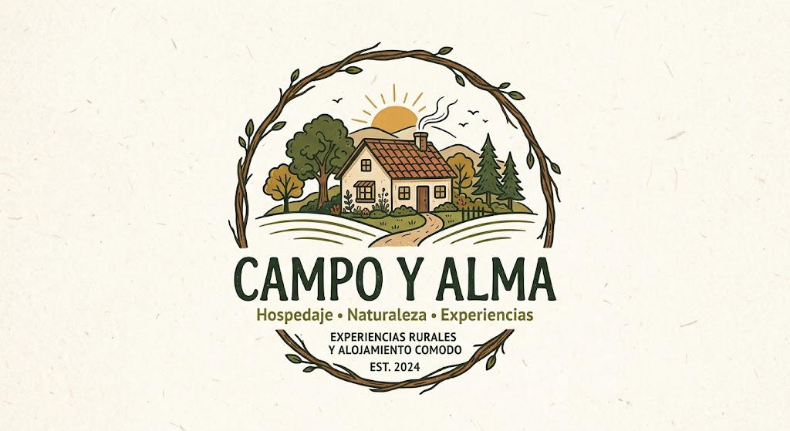

Experiencia agrícola
Cosechar Café
Pon las manos en la tierra y cosecha tú mismo los granos maduros. Aprende el camino del café, desde el árbol hasta la taza, guiado por nuestros caficultores. La jornada se ajusta a las fechas y disponibilidad que elijas.
Cosecha guiada
Recorrido del cultivo
Cata de café
¿En qué consiste?
Aprende a identificar los granos maduros y la técnica correcta de recolección mientras recorres los cafetales. Después visita el beneficiadero para entender el despulpe, la fermentación y el secado, y cierra la jornada con una cata de café de la región.
Qué incluye
- Guianza especializadaAcompañamiento de nuestros caficultores durante todo el recorrido.
- Equipo de cosechaCanasto y elementos básicos para la recolección.
- Proceso del granoVisita al beneficiadero: despulpe, fermentación y secado.
- Catación de caféDegustación guiada del café de la región con merienda típica.
Itinerario sugerido
- 1 · Charla inicialBienvenida y explicación de las variedades y la finca.
- 2 · Recorrido por el cultivoCaminata entre los cafetales y reconocimiento del grano.
- 3 · Cosecha guiadaRecolección de granos maduros en tu canasto.
- 4 · Proceso y cataVisita al beneficiadero y degustación final.
Recomendaciones
- HorarioLa actividad inicia temprano para aprovechar el clima de la mañana.
- CalzadoUsa zapatos cerrados y cómodos para caminar entre los cultivos.
- Protección solarGorra, protector solar y agua para mantenerte fresco.